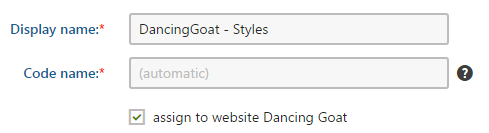
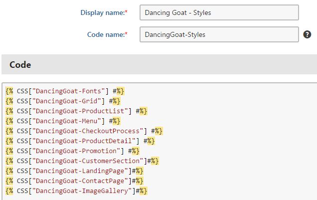
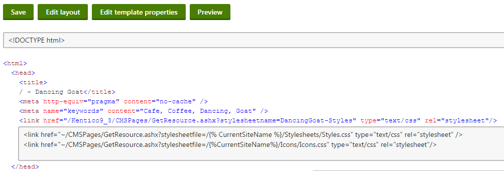
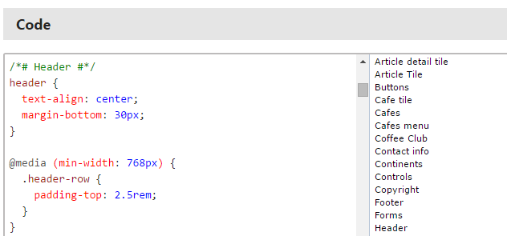

Designing websites using CSS
Kentico websites use standard CSS to define the appearance and design of pages and their components. The system organizes CSS code into stylesheets.
There are two ways in which we recommend that you style your website:
Also on this page:
Styling websites using the CSS stylesheets application
If you do not need any automation tools, such as preprocessors and bundling tools, we recommend styling your website using the CSS stylesheets application in the Kentico administration interface. Styles managed in the CSS stylesheets application are stored in the database instead of the file system.
Permission requirements
To work in the CSS stylesheets application, users need to fulfill one of the following requirements:
Have the Global administrator or Administrator privilege level
– OR –Belong to roles with the Read CSS stylesheets and/or Modify CSS stylesheets permissions for the Design module
Users without the Administrator privilege level only have access to stylesheets that are assigned to the current site.
Open the CSS Stylesheets application.
Create a New CSS stylesheet. We recommend the following naming convention, where YourSite is the Code name of your site:
Display name: YourSite - Style

Creating a stylesheet
Click Save.
Assign the stylesheet as the default stylesheet of your site or to individual pages.
You can consider separating your CSS into multiple stylesheets for simpler management. For example, you may want to use a SiteName - Navigation stylesheet for your website's navigation and SiteName - Landing page stylesheet for a specific landing page on your site. You would then combine all of the stylesheets in the main stylesheet assigned to your site. This is done using the {% CSS["Stylesheet"] %} macro. The main stylesheet can then contain only general styles, like the general styles for the html, body, and form elements that apply to the whole website.

Combining multiple stylesheets in one
Changes made to CSS stylesheets only take effect on the live site after you clear your browser cache and/or restart the application (System -> Restart application).
Tips
If you wish to use a dynamic stylesheet language, you need to register a CSS preprocessor in the system.
The system provides a CSS validator that allows you to check if the styles of individual pages are valid against CSS standards.
Assigning stylesheets to sites and pages
Each website in the system has a default CSS stylesheet. Global administrators can assign stylesheets to sites:
Open the Sites application.
Edit (
 ) the site.
) the site.Select one of the defined stylesheets in the Site CSS stylesheet field. You can only choose stylesheets that are allowed for the given site (on the Sites tab of the stylesheet editing interface).
Click Save.
Individual pages either use the website's stylesheet, or you can assign a different stylesheet. By default, pages automatically inherit the stylesheet from their parent page in the content tree, so you can quickly set the stylesheet for entire website sections.
Open the Pages application.
Select the page in the content tree.
Open the Properties -> General tab.
Select the CSS stylesheet.
Clear the Inherit box to use a different stylesheet than the parent page.
You can only choose stylesheets that are allowed for the given site.
Click Save.
When displaying pages, the system automatically adds a request that loads the assigned stylesheet into the HTML code.
Tip: When assigning stylesheets to sites or pages, you can directly create new stylesheets (click New) or edit the code of the selected stylesheet (click Edit).
Stylesheet URLs
You can access stylesheets using a URL in the following format:
~/CMSPages/GetCSS.aspx?stylesheetname=<stylesheet code name>
The GetCSS.aspx system page retrieves unmodified, user‑friendly stylesheet code even if minification of stylesheet resources is enabled.
Using automation tools to style websites
If you want to make use of preprocessors, code hinting or CSS bundling when creating your CSS, you need to store your CSS files on the file system.
This approach does not make use of the CSS stylesheets application.
Create a Stylesheets folder in <project folder>\CMS\<site name>. For example C:\inetpub\wwwroot\Kentico\CMS\CorporateSite\Stylesheets.
Set your automation tools to create CSS files in the folder.
Open the Pages application.
Select the master page and switch to the Master page tab.
Include the stylesheets in the head section of the page. For example, for a Styles.css file, you would enter the following:
<link href="~/CMSPages/GetResource.ashx?stylesheetfile=/{% CurrentSiteName %}/Stylesheets/Styles.css" type="text/css" rel="stylesheet" />

Linking stylesheets stored on the file system in the pageClick Save.
The stylesheets are now included in all the pages on the site.
Default styling of Kentico components
Kentico projects contain the Skin.css physical stylesheet by default, which provides basic styling for web parts and other components on the live site.
A global Skin.css file is located in the ~/App_Themes/Global folder. Individual sites have their own dedicated Skin.css files, which import the global Skin.css stylesheet. For example, the Corporate Site sample site has its Skin.css file in the ~/App_Themes/CorporateSite folder. If you edit the file, you can see that the stylesheet imports the global Skin.css file, and contains several additional styles for the Corporate Site.
The styles in Skin.css use the .ContentBody class to have stronger (more specific) selectors.
Note: The Skin.css stylesheet is linked by default on the pages of all Kentico sample sites except the Blank Site and ASPX Blank Site.
Creating custom component styles for sites
The default Skin.css styles may interfere with your site's custom stylesheets.
Use one of the following approaches to implement custom component styling for your website:
Do not include Skin.css on your site, define all required styles as Kentico CSS stylesheets or CSS files on the file system.
Use the !important directive or stronger selectors (with more classes) in your CSS to override the default styles
Edit the skin stylesheets directly
Note: If you edit the global skin stylesheet, the changes affect all sites in your Kentico instance, and may be overwritten when you upgrade the site to a new version of Kentico.
LESS code base
Skin.css is generated from the LESS Skin.less file. You can modify Skin.css directly, but you lose the advantages of the structured, commented and more readable .less file.
The Skin.less file is located in ~/App_Themes/Global and includes multiple skin sub-files in the ~/App_Themes/Global/Skin folder.
If you are uncertain how to work with LESS, you can find an article describing the process at Using the LESS CSS Preprocessor for Smarter Style Sheets.
Using CSS blocks for easier navigation in CSS code
You can use comments in format /* #BLOCKNAME# */ to improve navigation in the code of large CSS stylesheets. You can access blocks within the stylesheet code through the bookmark list next to the editor.
To create a hierarchy of sub-blocks, separate the names of individual block levels using forward slashes, for example: /* #BLOCKNAME/SUBBLOCK# */
/* #Menu# */.../* #Menu/TreeMenu# */.../* #Menu/MainMenu# */...
Creating sections in stylesheets
Browser and language‑specific styles
The system automatically assigns CSS classes to the <body> element of pages according to the characteristics of the selected language (the text direction and exact culture) and the browser used to display the page. For example:
<body class="LTR Chrome ENUS ContentBody" >Four types of classes are added:
Text direction – the LTR class is assigned for left‑to‑right languages, and RTL for right‑to‑left.
Browser type – added according to the browser in which the page is opened. The following classes are used:
Browser
Class names
Internet Explorer
InternetExplorer
Firefox
Firefox
Safari
Safari
Google Chrome
Chrome
Microsoft Edge
Chrome
Opera
Chrome
Culture – the name of the class is added based on the culture code of the page's content (without the hyphen), for example ENUS for pages using the en-US culture.
This feature allows you to style page elements differently according to the browsing environment of the current visitor. You can define styles for any combination of the classes mentioned above.
For example, you can add the following into a website's stylesheet:
_:-ms-fullscreen, :root .InternetExplorer .MyFont { font-size: 20px; } .Firefox .MyFont { font-size: 18px; }Now elements styled using the MyFont class have a different font size when viewed in Internet Explorer or Firefox browsers.